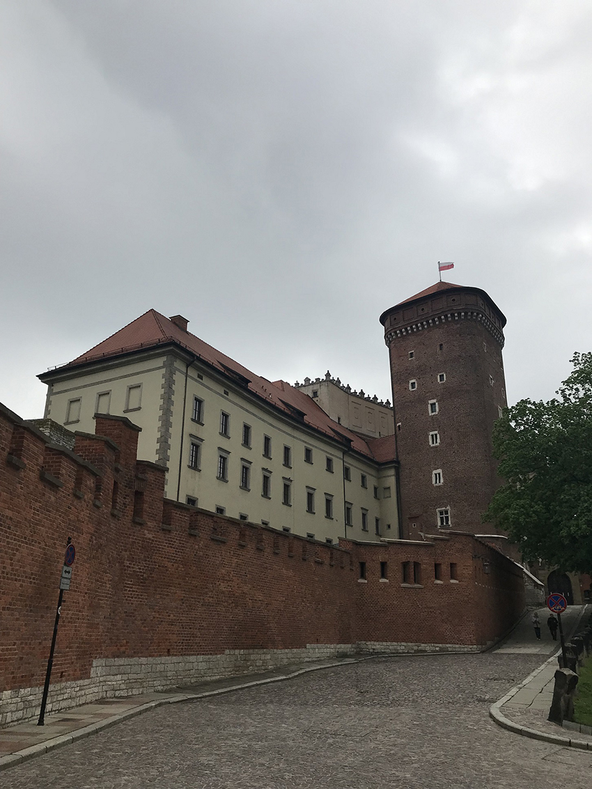
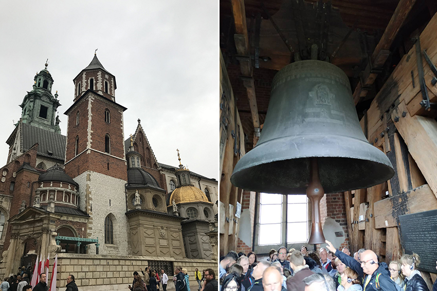
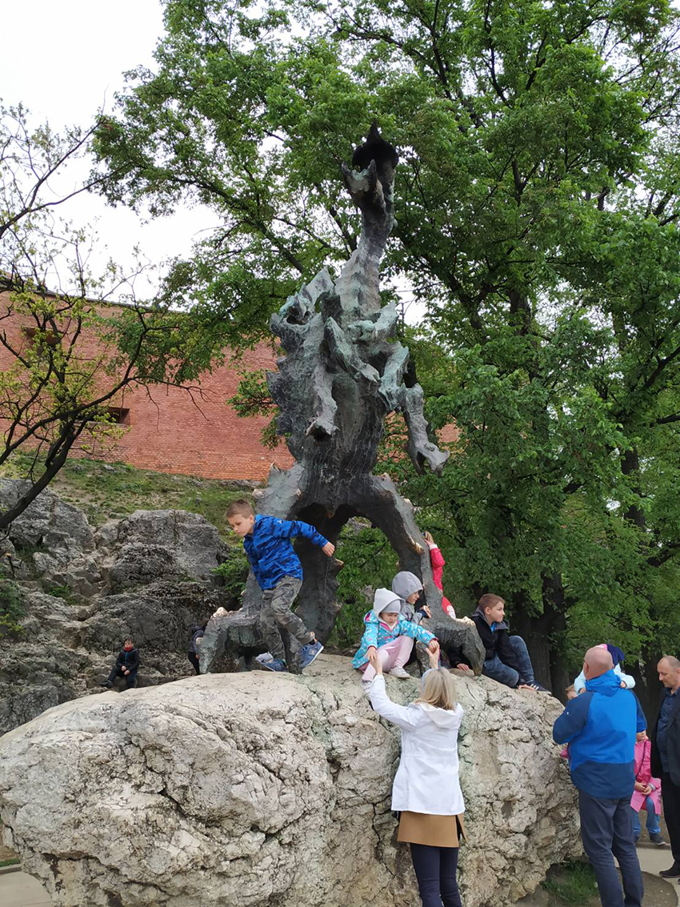
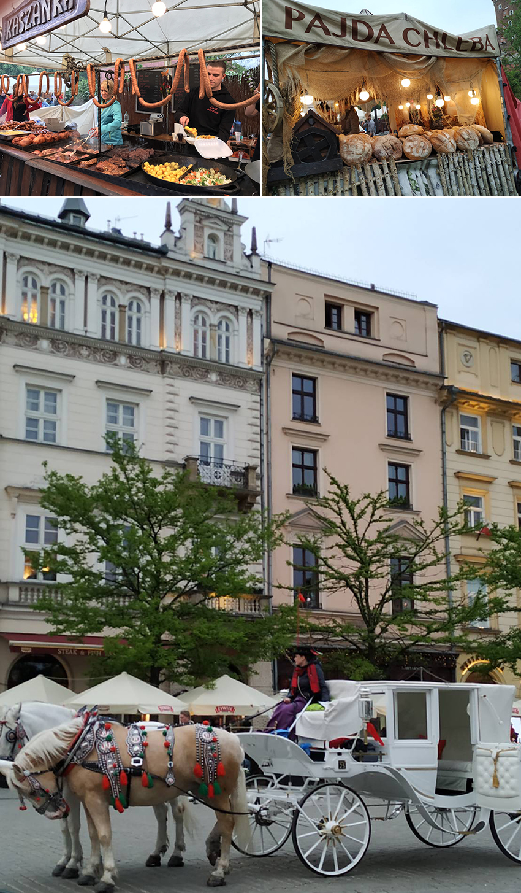
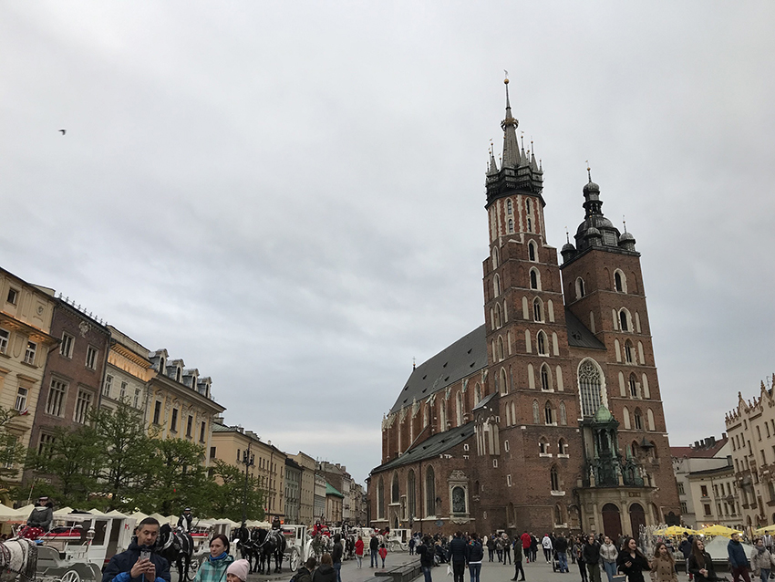
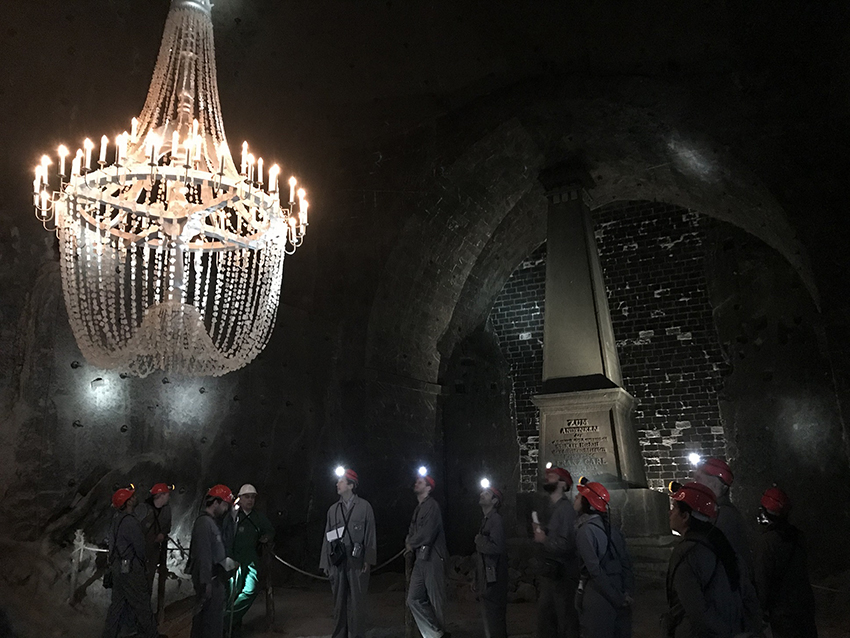
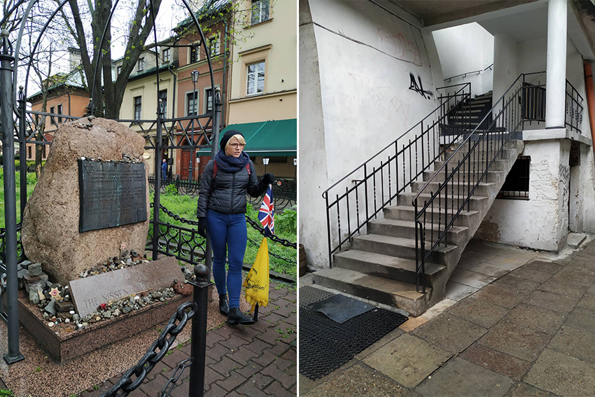
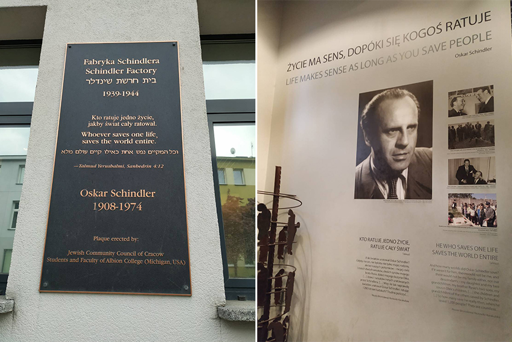
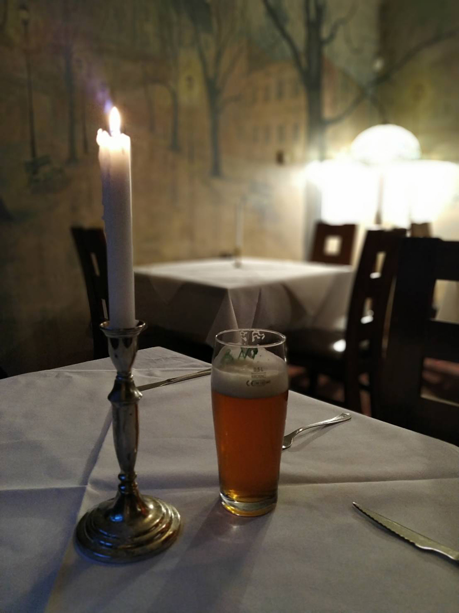

|  |
去年在波蘭出差待了一段時日，波蘭同事跟我說一定要去南邊的文化古城克拉科夫(Kraków)走走，便利用某個週末動身前往。克拉科夫自1038年即為波蘭首都，直到1596年由西吉斯蒙德國王（Sigismund）遷都華沙，現為第二大城，也是波蘭重要的文化之都，舊城區在1978年被列入世界文化遺產。我搭火車到克拉科夫後，費了九牛二虎之力終於走對了出口，先在市區找到貫穿南北的「皇家之路」，向南走到盡頭，就到了今天行程的第一站：山丘上的瓦維爾城堡(Wawel Castle)。城堡修建於14世紀的國王卡齊米日三世(Kazimierz III)時期，是波蘭的國家象徵之一，在歷史上曾長期是王室的住所，國王的加冕及喪禮都在這裡舉行，歷任國王與皇室也長眠於此。
|  |
初來乍到看城堡裡的皇家教堂總覺有種參差不齊的醒目感，後來才知原來是陸續完成於不同世紀，因此哥德式、文藝復興、巴洛克同時呈現，不同世代的建築風格在此形成磅礡大器的匯集，越看越覺得美。進入教堂內參觀是禁止拍照的，內部雕工精細、富麗堂皇。看完內部再從教堂左側沿著狹窄的樓梯上鐘樓，再到頂樓俯瞰古城，陰天下的紅瓦屋頂依然像是童話世界般。
|  |
瓦維爾城堡底下有個傳說中的惡龍巢穴，中古世紀時期某國王為了不想把公主進貢給瓦維爾龍，昭告天下誰可以成功殺死噴火龍就把公主許配給他。後來有個鞋匠把硫磺塞在牛(羊)肉裡，引誘惡龍吃下，龍吃下後非常口渴，跑到河邊把瓦維爾河一飲而盡，結果肚子撐爆死了，鞋匠成功為民除害。我慕名而去，看到的是個空空暗暗、狹長崎嶇的石灰岩洞穴。倒是龍穴出口有一隻龍的雕像，隨著時光推移，邪惡的噴火龍現已轉型成吉祥物，吸引許多小孩在此開心玩耍。
|  |
走出城堡，外面正好有個市集，我對這種市集百逛不膩，手工藝品或是織品都看的到手藝家的巧思，食物看起來也新奇有趣。由於已近傍晚時分，我索性就在市集吃晚餐，在不到十度的初夏微冷空氣裡，點了一碗熱湯，喝下的是溫暖，買了幾串烤肉，吃下的是幸福，坐在如茵的草地上享用，這是十足歐洲式的奢侈。之後我沿著「皇家之路」又走回到了舊城區，這條石磚大道上有許多服飾店、咖啡廳、紀念品店等等，算是連結舊城區與一些著名景點的捷徑。舊城區有好多白色古典馬車，多由顏色鮮麗又高聎苗條的波蘭姑娘來招攬觀光客，但真正駕馭馬車的是波蘭大叔，可見美色對於觀光客還是很重要的。
|  |
舊城區的聖瑪莉大教堂，是建於13世紀的不對稱雙塔教堂，13世紀時驍勇善戰的蒙古人不僅攻入了中原，居然還打到波蘭去了，在教堂鐘樓上有個號手為了提醒大家蒙古大軍來了，被蒙古弓箭手射中，因此現在每到整點，鐘樓上便會響起一段中斷的號角聲以紀念這位號手。我從廣場往上看，那個鐘樓非常高，鐘樓上的孔洞又小，到底蒙古神射手要如何射中波蘭號手，令人百思不得其解。在這個號稱歐洲最大的市集廣場上還有一個文藝復興風格的紡織會館，裡頭有一攤一攤的紀念品及波蘭手工藝品販售，會館牆上也裝飾著各個城市的市徽，人來人往非常熱鬧。
|  |
隔天一早我就去探訪克拉科夫附近的著名景點：維利奇卡鹽礦 (Wieliczka Salt Mine)。我前一天晚上先看了一下路線，估計走路一小時可到，我喜歡用走路來與一個城市有更深刻的互動，於是便早起，依著 google map 小藍點前進，邊走邊欣賞城市風貌。只是小藍點導引我到了一個山丘上的民宅，怎麼看都不像鹽礦，此時剛好有好心民眾路過，跟我說此處地址跟鹽礦一樣，但是郵遞區號不同，天啊…真是晴天霹靂，大概就像我們從北到南的大城小鎮都有中山路跟中正路一樣吧。由於鹽礦對觀光客有些規定，比方說進入地下鹽礦基於安全考量，必須事先報名、購票，跟著固定時段的導覽團，不是想去就能去，萬一我錯過原訂時間可能就沒機會了，一切忽然緊迫了起來，我趕緊打電話給鹽礦的售票業者跟他說我走錯地方可不可以等我一下，同時叫了Uber飛車載我過去，剎那間似乎所有萍水相逢的陌生人都來幫助讓我能準時到達，好心的鹽礦哥甚至到Uber下車處接我，帶我快步又走了一小段路才到集合的地方，很幸運的，趕上了！跟鹽礦哥千謝萬謝過後就隨著排隊人群，換上礦工服、戴好安全帽及頭燈後進入。
鹽礦從13世紀開採，目前已停產，在地底下有九層，有教堂及許多鹽雕。進入鹽礦的路線有兩種，一是一般觀光客路線，一是鹽礦工體驗路線，我選了後者。帶隊的工頭在暗無天日的地底隧道就像在走家裡廚房一樣，左拐右彎爬上爬下，我還趁機摳了一下牆壁上的岩石嚐嚐，真的是鹹的呢。在地底下還有鋸木頭、搗岩鹽、推水車等等活兒可做，從做中明白百年前礦工的一日，我想今天我以遊客的愉悅心情很難體會到當年礦工血淚辛酸的百萬分之一吧，最後拿到一張鹽礦工的證書。
克拉科夫附近還有一個經典行程：奧斯維辛集中營 (Auschwitz-Birkenau)：二戰時期納粹德國進行猶太人大屠殺行動的主要集中營，估計約有 110 萬人在此集中營被殺害。這段歷史實在太沉重，我選擇不前往現場參觀，在心裡悼念聊表心意。
|  |
猶太人約從10世紀開始落腳波蘭，約從1495年起猶太人被禁止居住在克拉科夫城內，於是集中遷往卡齊米日地區，日子就這樣過下去，直到納粹入侵。雖然我沒有去集中營，去卡齊米日區一樣可以一窺猶太人的文化與歷史，參觀的多是教堂與墓碑等等。波蘭旅行的好處就是可以在特定時間地點集合，由拿黃雨傘的志工解說員導覽，邊走邊說故事，走著走著就來到一塊紀念6萬5千位在二戰中被殺害的猶太人的紀念碑前。拍猶太人的電影也多在此地區取景，走著走著就路過電影「辛德勒的名單」裡猶太婦女在躲納粹德軍時遇到女兒的朋友的樓梯。這個地區有太多的角落都有故事，有一堆無法追究的悔恨、有幾句來不及被聽到的告誡與遺囑、有不得不臣服於蒙昧與野蠻的嘆息與抽泣。
|  |
辛德勒的工廠也在附近，辛德勒是德國商人，本來想藉由戰爭發財，雇用比波蘭人便宜的猶太人，後來和女友在山丘上目睹猶太人被大屠殺的慘況，開始著手拯救行動，散盡家財來保護猶太人的生命安全。可惜我到的時候紀念館差不多要打烊了，只能在一樓參觀。看著青灰色的工廠大門，似乎透露著一種遙遠的愁傷，這種愁傷來自七八十年前曾在這裡打拼的、被救贖的猶太人的心底深處。
|  |
克拉科夫擁有豐富的歷史文化，有過往的繁華也有猶太人的哀戚，有歷史的沉澱也有時間的幽深，有現代的方便也有古典的情韻，行走中每一步都雋永又深刻。